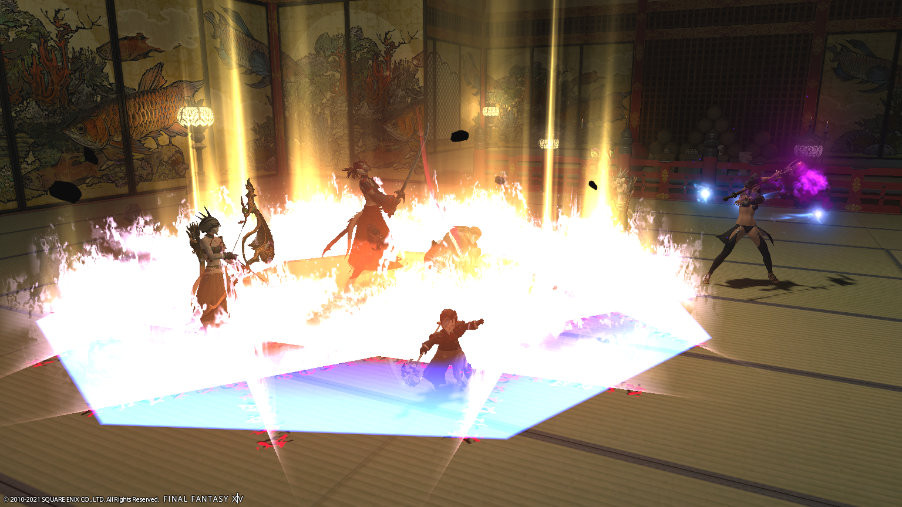
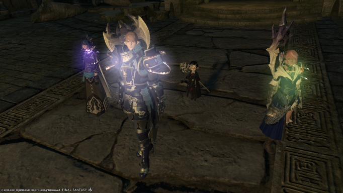
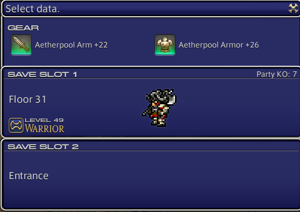
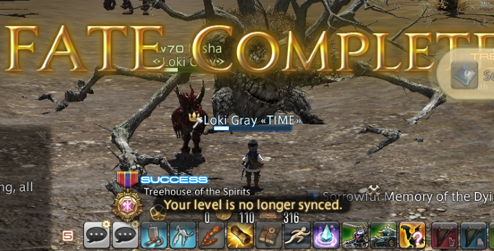
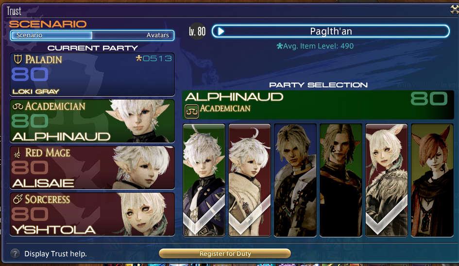
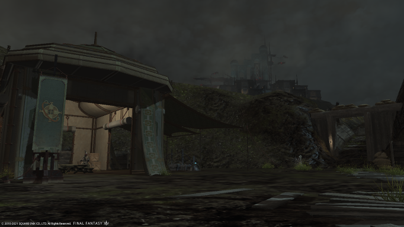

Level up your first class with main scenario quests
Final Fantasy 14 provide a complete main main scenario quest to guide you to play with your first class.
Even without preferred sever bonus leveling would be easy and straight forward until 40lv.
Most of the time you should follow the story line to unlock most of the playing method in this game.
When current MSQ require a higher level, you can leveling by these following contents:
(Notice!)Job Quests
Job quest provide amount of experience, but it is not the main contents for leveling.
But complete these quest will unlock new skills and unlock new class on 30lv.
You should complete your current class's quest job as soon as possible.
(Notice!)When you reach 60lv
Beast tribes quest in 4.0 & 5.0 expension will be a way to gain some bonus experience.
But notice that you can only complete 12 quest every day
(Allowance reset at GMT+9 00:00 everyday)
Dungeon with players
Dungeons are instanced areas teeming with enemies and bosses, fought by a party of (usually) 4 players.
Each instance of a dungeon is separate from others and is exclusive to a specific party.
Dungeons need to be unlocked through quests (many are unlocked as part of the main story).
They also have level requirements (and, starting at level 50, item level requirements).
Players below the level requirement cannot enter the dungeon.
Players above the level requirement are level synced to the maximum level permitted for the dungeon.

Dungeon with adventurer squadrons
Adventurer Squadrons allow players to take command of soldiers in their respective Grand Companies.
After assembling a sufficient number of NPC recruits,
players can enter dungeon alongside three of your squadron NPCs.
If you are leveling a DPS role, you better leveling with squadrons or enter Deep Dungeons to avoid a longer queue time.

Deep Dungeons
After 17lv you can unlock the Deep Dungeon named The Palace of the Dead in New Gridana(x: 12.0 y:13.1).
It is better form up a 4 players team to complete this dungeon.
But you can also enter the dungeon yourself as a challenge.
Another deep dungeon named Heaven-on-High can be unlock at 61lv in The Ruby Sea(x: 6.2, y:11.7).

F.A.T.E.
Every map will trigger some F.A.T.E(Full Active Time Events).
FATEs involve boss battles, escort missions and other events.
Players can complete these events for experience, gil and Grand Company seals.
Occasionally players will also receive items for successful completion of a FATE at gold medal.

Levemete
Levemete is still a common way to leveling.
Each time you comlpete the quest can gain various rewards.
You can gain 3 allowances every 12 hours, and the max allowances is 100.
Notice that you cannot accept levemete without allowance.
In our opinion, Battle levemete is not a good option for leveling even it still an option.

After 70lv, two more optional method will be unlocked:
Dungeon with specific NPCs (TRUST)
The TRUST will be unlocked via main scenario quest and you can leveling with specific in-game characters.
You can take all the loots and complete the dungeon in your own pace.

The Bozjan Southern Front
The Bozjan Southern Front is an instanced area that up to 72 players can explore simultaneously,
and is the first major battlefield in the Save the Queen: Blades of Gunnhildr storyline.
It is where players assist the Bozjan Resistance in reclaiming their homeland from the IVth Imperial Legion.
After complete the Return to Ivalice storyline and 5.1 main scenario quest you can complete the FATE and events for leveling.
